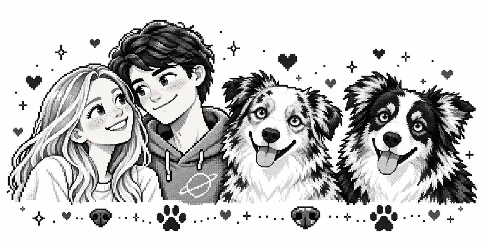

SASHA NAVIGATION · BOARDING GATE
Almost home,
Irochka.

Your ticket holds our secret word.
Four lines. Four first steps. One word.
A little riddle before our little adventure.
Look inside your paper ticket. Read the first letter of each of the four lines, from top to bottom.
Look how far your little feet have been.
One more adventure waits beyond this gate.
Very soon, I’ll hold you close again.
Every road feels warmer with you.
SO MANY CITIES. ONE VERY LOVED IROCHKA.
Your suitcase.
A whole little world.
Hop across rooftops, ride the boats, chase the wind.
Collect our little memories. Find the way home.
A little game from Sasha. Made for your tired feet.
← → or A / D to move · Space to jump · jump again in the air!
DESTINATION FOUND
You don’t have to know
every turn.
Irochka,
So many cities, so many little adventures.
And through every one of them, you’ve been close to me.
If you lose your way, forget the city, or simply feel tired — call me. We’ll figure it out together.
The next stop is a hug.
The two fluffy members of your welcome committee are ready, too.
I’m always here for you.
With love, Sasha ♡